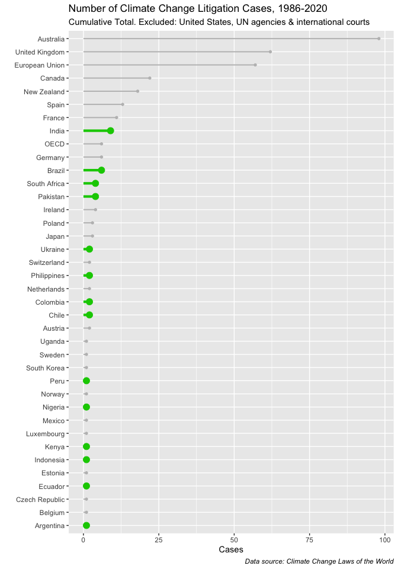

Breakfast_0004
January 4, 2021
Good morning. Today I’m taking a shot at making a lollipop chart.
The goal is to create some other kind of visualization and practice writing more reproducible, less messy ggplot code.
I created the CSV file based on page 6 (Table 1.1) of this document. The data source is from Climate Change Laws of the World (CCLW).
Setzer, J. & Byrnes, R. (2020). Global trends in climate change litigation: 2020 snapshot. London: Grantham Research Institute on Climate Change and the Environment and Centre for Climate Change Economics and Policy, London School of Economics and Political Science. https://www.lse.ac.uk/granthaminstitute/wp-content/uploads/2020/07/Global-trends-in-climate-change-litigation_2020-snapshot.pdf
For the code for lollipop charts, I consulted this page: https://www.r-graph-gallery.com/304-highlight-a-group-in-lollipop.html
The original table looks like this:

We want to make a chart that answer the following questions:
Other than the United States, how do other countries rank in the number of climate change litigation cases?
Which are developing countries and how many cases do they have?
Note1 I don’t know what to do with the United Nations bodies and international courts, so I’ll just remove them for now. If someone has advice or ideas on how to represent these entities in the global context of litigation numbers (separate chart?), I am happy to hear from you.
Note2 I tried sorting Top 20 countries only. Then found that it didn’t make much sense because the data is from 1986 till now, and also many countries tie at the lower number of cases (7 countries at 2 cases). Might be the more logical choice to just plot all the countries. Nonetheless I used the code r slice_max(order_by = Cases, n=20) to subset rows based on the order of column values.
library(tidyverse)
lol01 <- read_csv("files/Climate_change_cases_1986_to_2020.csv")
#removed United States (at 1,213 cases it distorts the rest of the data)
dat01 <- lol01 %>%
filter(Country!="United States",
Country!="UN Framework Convention on Climate Change",
Country!="Inter-American Court and Commission on Human Rights",
Country!="UN Human Rights Committee",
Country!="UN Special Rapporteurs",
Country!="International Court of Justice",
Country!="UN Committee on the Rights of the Child") %>%
arrange(desc(Cases))
# ggplot by default shows countries by alphabetical order. Annoying.
# tried mutate to as.factor() or as.ordered() and it didn't work
# solved by reorder()
developing = c("India", "Brazil", "Pakistan", "South Africa",
"Chile", "Colombia", "Philippines", "Ukraine", "Argentina",
"Ecuador", "Indonesia", "Nigeria", "Kenya", "Peru")
plot_lol01 <- ggplot(dat01, aes(x=reorder(Country, Cases),
y = Cases)) +
geom_segment(aes(x=reorder(Country, Cases), xend=Country, y=0, yend=Cases),
color=ifelse(dat01$Country %in% developing, "#00CC00", "grey"),
size=ifelse(dat01$Country %in% developing, 1.5, 0.7)) +
geom_point(color=ifelse(dat01$Country %in% developing, "#00CC00", "grey"),
size=ifelse(dat01$Country %in% developing, 3.5, 1.2) ) +
coord_flip() +
theme(legend.position="none",
plot.caption = element_text(face = "italic")
) +
xlab("") +
ylab("Cases") +
# scale_x_discrete(, expand = c(0,0)) +
# scale_y_continuous(expand = c(0,0))
labs(
title = "Number of Climate Change Litigation Cases, 1986-2020",
subtitle="Cumulative Total. Excluded: United States, UN agencies & international courts", caption="Data source: Climate Change Laws of the World")
plot_lol01
Notes from Playing Around I installed and played around with the hrbrthemes package, but in the end decided it was unnecessary for my purposes (and uninstalled it). https://github.com/hrbrmstr/hrbrthemes